Main game screen (or Combat screen) showing
the current game zone where your characters accomplish their objectives; the
same screen is used in case of random encounters with enemy and for setting
camp.
Game zones
Game zone is a rectangular area with various structures
and objects. Game zone is part of an region — a district area in the country
you squad comes to. Usually you'll have to face well-armed opposition in game zones. In
scenario zones whose location will be revealed to you by various documents,
you'll need to find clues (documents, things), locate certain characters or
perform other tasks (specified in mission objectives).
Apart from script zones, your characters may come face to
faces with enemy in other parts of the current region (random encounters);
these take place in special game zones. Such zones are usually smaller than
scenario ones; it's localities of the district where your squad operates.
You might find yourself on a road, in a town or village, in a field or deep
in a forest… Finally, travelling around the region, your group might make
a stop in a safe place and set camp to swap various items and if necessary
treat the wounded. All game zones have identical interface; please refer to
Combat Screen section of this manual for more.
Base is where your group stays between missions. At base
you can meet characters who'll tell you about a new mission, or receive orders
from the command. You can use the Agents File to hire characters with various
professions and skills; Armoury with a wide choice of weapons and ammunition;
and Hospital to treat the wounded members of your squad. Please see Base Screens
section of this manual for a detailed description of these screens' interfaces.
Tips and hot keys
To make the gameplay more convenient, all screens have a
lot of tooltips displayed automatically as you place the mouse cursor over
an object. For example, in Options screen you can see description of various
switches and sliders; Combat screen provides tips on all of the game panel
buttons; Equipment and Armoury screens offer detailed descriptions of weapons
you place the cursor over, etc. Tips are displayed against a semi-transparent
background.
Though the game is mostly controlled by the mouse, you can
perform many common tasks by pressing hot keys. The appropriate keys are mentioned
in the tips appearing when you place the mouse cursor over interface elements.
Using hot keys makes the gameplay much easier. Please
see Appendix for full list of hot keys.
Game menu
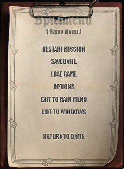
You can call up the Game menu at any moment by pressing
<F10> key.
It has the following commands:
Restart mission – play the
current mission from the beginning.
Save game — saves the current
game. Each saved game must be given a name.
You can also quick-save your game without calling up the menu — just press
<F5> key.
Load game — loads any of
the saved games from the list. To load the last quick-save without calling
up the menu, press <F8> key.
Options — changes game options (this command calls up the same screen as the
identical command in the Main menu; see Options Screens for more).
Exit to Main Menu — quits
the game and calls up the Main menu.
Exit to Windows — quits the
game and exits to Windows.
Return to Game — returns
to the current game.
Before you exit to the Main menu or Windows, you'll be prompted
to save your current game.
Save/Load screen
This screen allows you to save the current game situation
to disk or load any of the previously saved games. The left screen section
displays a list of games on one of two tabs. To switch between saving/loading,
click on the appropriate tab. The lists on both tabs are identical except
for the Game Name entry field (only available on the Save tab, see picture).
The left column of the list displays game names, the right — dates when the
games have been saved; the selected line is marked by pointer. Use the scroll-bar
at the right or the mouse wheel to scroll through the list. The right screen
section displays a scaled-down image of the current game situation (when you
save it), or of the game selected for loading.
To call up Save Game screen press <F6>, Load Game
— <F7> keys.
To load a game, select the appropriate line in the list
and click on Load command in the lower screen section. To save the game, type
the name in the entry field and click on Save. Game names may include any
letter or digit or hyphen and underline symbols. You can choose an existing
name for saving a new game; in that case the previously saved game will be
replaced. Quick-save and auto-save (see below) names are assigned automatically,
they cannot be used for manual saves.
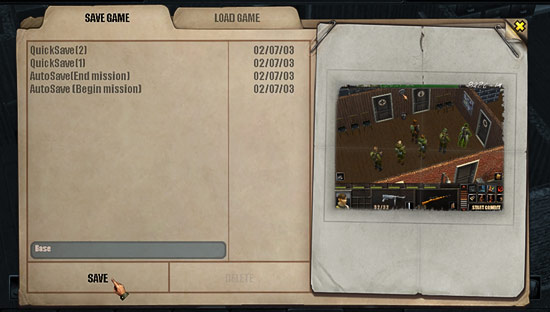
Delete command deletes the selected saved game. When you
click on this button, you'll be prompted to confirm your action.
Close Screen button
Please note the yellow cross at the top right-hand corner
of Save/Load screen: this button allows to close the screen. When you click
on it, you'll get back to the previous screen. Most of the other screens in
the game which look like journals or documents also have this button.
Quick-save and Auto-save
Quick-save feature allows you to save the current game situation
without calling up Save Game screen. Simply press <F5> key; while the
game is being saved, «Saving...» message will be displayed in the
centre of the screen. To load the last quick-save, press <F8> key; «Loading»
message will appear on the screen. The game saved in this manner is saved
under «quicksave» name. There are two quick-saves in Silent Storm
called quicksave(1) and quicksave(2); they are used in turn, one after
the other. When you do quick load the latest of the two will be loaded. If
you want to load the second quick save you will have to enter the load menu
manually and choose the respective saved game.
Every time you enter or leave game zone, the game is saved
automatically, as «auto-save (mission start)» or «auto-save
(mission end)». These names never change, each new auto-save replaces
the previous.
Options screens
These screens which look like journals provide access to
various game options. The left screen section displays a menu listing various
groups of options: Video, Audio, Gameplay, Controls and
Profiles. The right section depends on the selected group. To close
this screen and return to the Main or Game menu, click on the yellow cross
at the top right-hand corner. When you exit Options screen, all unconfirmed
changes will be cancelled.
The lower screen section has Set Defaults command that restores
default settings recommended for your system.
There are three ways to change game options:
Switches have two states: «on» and «off»; just tick
the box accordingly (click on it).
Sliders fine-tune appropriate
parameters: drag the slider to the left to decrease the value and to the right
to increase it. Alternatively, click on buttons at the ends of the slider.
Pull-down menus allow to
select appropriate settings from the list; they are marked with stars placed
at the end of the setting's name. Just click on the setting to pull down the
appropriate list.
Video options
This screen includes options which can significantly affect
the image quality and game speed. Most settings are determined automatically
the first time you launch the game. We do not recommend seriously changing
the default settings suggested for your system.
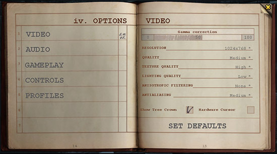
Gamma correction sets gamma-correction in the game, i.e. image brightness in «grey»
areas between the darkest and lightest sections. Allows to adjust the image
according to your monitor parameters. Default setting:
50.
Resolution sets video mode for the game. Available settings depend on your video
controller and monitor parameters. If your system meets the recommended requirements,
we advise to set 1024x768 resolution (or do not change
the default setting). For slower systems a lower resolution can be used, but
image quality would suffer.
Quality sets general image quality. Very High value
provides the best quality, High — good quality, Medium — a compromise between
quality and speed, Low gives top game speed.
Texture Quality sets quality of textures; this determines how surfaces would look
in the game. Very High value gives the best texture quality, High — good quality,
Medium — a compromise between quality and speed, Low gives top game speed.
Lighting Quality affects
the game speed after you move the camera. Very High value immediately provides best image quality but seriously
reduces game speed and final image redrawing takes a while; High— good quality
but still final image redrawing takes a while; Medium is a compromise between
quality and speed, final image redrawing and drawing of bump takes a while;
Low gives top game speed, but there is no delay for final image redrawing.
Anisotropic Filtering affects
appearance of surface textures positioned at a narrow angle to the camera.
x8 value provides the best image quality but significantly reduces speed;
x4 — very good quality; x2 — good quality; None — top game speed.
Antialiasing affects image smoothing. Very High value provides
the best smoothing, High — good quality, Medium — a compromise between quality
and speed, Low — image gets blurred but ensures top game speed.
Show Tree Crown — displays
trees' leaves (if switched off, only branches will be shown). Default setting
is «On». Switching tree crowns off noticeably increases game speed
at slower systems but makes the image less realistic. Note: this setting does not affect characters' field of vision
or visibility.
Hardware Cursor allows to
change the game's artistic colour cursors for simple icon-shaped cursors.
Switching this setting on speeds up cursor movement; it's recommended for
slower systems (if the cursor moves too slowly or jerkily). Default setting:
«Off».
Audio options
This screen allows to change settings affecting sound effects
in the game.
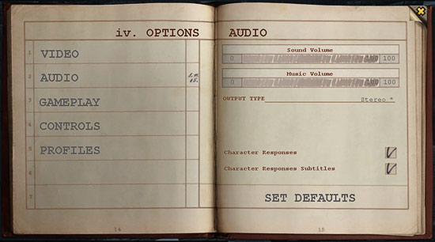
Sound volume sets general
sound volume. Default setting: 100.
Music Volume sets volume of music played in the game. Default setting:
100.
Output Type sets the number and type of sound channels. Available values:
Mono, Stereo, Headphones, Quad, Surround, 5.1. If your system is sufficiently
powerful, we recommend choosing the value best suited to your sound processor
and acoustic hardware. Default setting: Stereo.
Character Responses sets
whether your characters would verbally acknowledge your commands, tell you
about what they see and make progress reports. Default setting: «On».
Character Responses Subtitles
sets whether to display characters' lines' subtitles. Subtitles are displayed
in the left section of the Combat screen, above the game panel. Default setting:
«On». Note: in dialogue mode subtitles are always displayed regardless
of this setting.
Gameplay options
This screen allows to change settings affecting the gameplay.
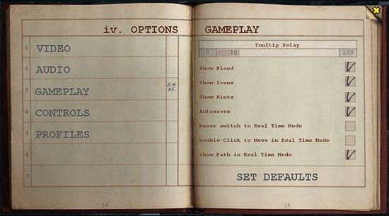
Show Blood sets whether to display blood and injuries when characters are wounded.
Default setting: «On».
Show Icons sets whether to display special icons over enemy characters. Default
setting: «On».
Show Hints sets whether to display icons above items containing hints and tips
on the gameplay, and whether to display those hints immediately. Default setting: «On».
Autosaves allows to save the game automatically every time you enter or leave
game zone. Default setting: «On».
Never Switch to Real-Time Mode
doesn't allow the game to switch from turn-based to real-time mode when your
characters do not attack enemies or don't see them. Default setting:
«Off» (i.e. allows real-time mode).
Double Click to Move in Real-Time Mode
sets whether characters in real-time mode would start moving only after you
double-click on the destination point (like in turn-based mode). Default setting:
«Off» (i.e. characters start moving immediately after you set a
destination point for them).
Show Path in Real-Time Mode
sets whether characters' routes will be displayed as a dotted line in real-time
mode too (like in turn-based mode). Default setting:
«On».
Tip Delay sets the period time after which context tooltips appear on the screen
when you place the cursor over a screen object. Default setting:
50.
Control options
This screen allows to set camera controls.
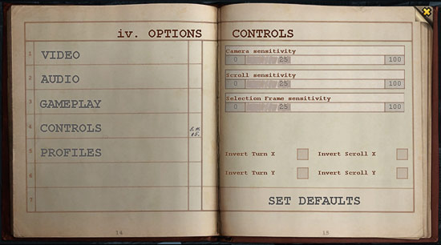
Camera Sensitivity — sets camera movement, rotation and incline speed when you control
it using the keyboard or the mouse.
Scroll Sensitivity — sets camera scroll speed in game zones.
Selection Frame Sensitivity — sets the distance to move the mouse while pressing and holding the
left button to begin frame selection.
Invert turn X, Invert turn Y, Invert scroll X, Invert
scroll Y — for each of the two coordinates (X and Y), sets relationship between the direction of mouse movement
and camera movement; also, sets mouse wheel rotation direction for zooming
in/out.
Profile options
This screen allows to set the profiles’ options for one
or several players.
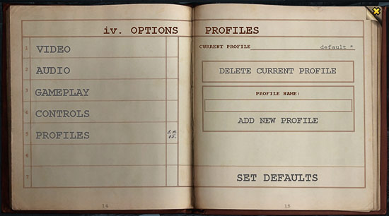
(Current profile) — allows
to select one of the existing profiles. Profiles include all the game settings and saved games that were made by the player who
owns this profile. The first time the game is launched, the default profile
is made, afterwards it is possible to add new profiles of choose one of the
existing.
Delete current profile —
allows to delete one of the existing profiles. The default profile
can not be deleted.
Profile name — the field where you enter the name of the new profile that is being
created. After you enter the name, click on the Add new profile button.
New profile with this name will be placed into the folder with the same name
in the game directory.
Game cursors
Cursor shape in Silent Storm is context-dependent:
when you place it over an object, the cursor changes shape to indicate what
the selected character will do when you click on it. Some commands change
the cursor shape until the command is carried out or cancelled. The right
mouse button on the Combat screen controls camera rotation and angle (please
refer to Combat Screen, Camera Controls section).
When you consider issuing command to a character in Combat
screen in turn-based mode, you'll usually see numbers displayed to the right
of the cursor. These show the probability of successfully carrying out the
command (if appropriate) indicated by the cursor shape (in percentage points),
and the number of APs this action will cost. In real-time mode, or if the
command does not involve spending APs, only the probability will be displayed.
On the other hand, for actions which will be carried out anyway (e.g. opening
doors or setting up mines) only the AP cost is displayed.
Now let's have a closer look at the game cursors and the
actions they indicate.
General cursors
This group of cursors allow to control the game interface
and provide information about the current game situation.
|
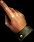 |
«Pointer»
hand-shaped cursor — the standard cursor for using menus, buttons and
other interface elements in service screens, windows and control panels.
In Combat screen is used for selecting characters and setting destination
points for them. |
|
|
«Marker»
pencil-shaped cursor is used in Options screens to change game options.
On global and region maps allows to choose the region for your squad
to go to. |
| |
«Wait»
cursor indicates you'll have to wait until the game completes internal
operations. For example, the cursor stays in this shape during the opposition's
turn or while the game is being saved/loaded. When the cursor looks
like this, the game panel buttons remain inactive. |
| |
«Unavailable»
cursor is displayed when a certain action cannot be taken for some reason
(for example, character doesn't have enough APs to carry out your command).
In that case wait until the next turn, or issue a different command. |
Action cursors
Cursors of this group appear mostly on Combat screen; they
are used to issue commands to your characters (to use things or interact with
other characters.
| 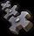 |
«Action»
cursor appears when placed over an item with a default action associated.
The nature of the action is usually obvious; it depends on the situation
and the item. Most common actions include:
- Human body — pick up to carry;
- Stationary gun — get ready to fire;
- Panzerklein — come and put on the armoured suit.
To perform the action, simply click on the item. |
| 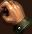 |
«Take»
cursor shaped as a hand holding something, appears when placed over
an item the character can pick up and take with him. If you need to
pick several items at once, press and hold <Alt> key; after that
items' names will be displayed above them (please see Combat Screen,
Using Items section of this manual). To take the item, click on its
name. |
| 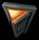 |
«Open»
door-shaped cursor appears when placed over a door, a box lid etc. which
can be opened without a special tool. In turn-based mode, the total
amount of APs needed to come and open the door will be displayed to
the right of the cursor. |
| 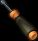 |
«Tool»
cursor appears when placed over an item which needs a special tool and/or
skill to be handled. For example, to open a locked door a key or a lock-pick
is needed; to disarm mines, characters will need a probing rod or a
mine-detector. In both cases they'll also need Engineering skill. The
tool becomes active as soon as the character takes it. |
| 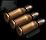 |
«Load»
cursor appears when placed over an enemy character if the active weapon
is out of ammunition. Click to reload it (alternatively, take another
loaded weapon). |
| 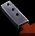 |
«Unload»
cursor appears when you click on «Unload» button in the Character's
Items interface. Click on the weapon in the character's hands or in
a slot; the weapon will be unloaded and the ammunition will appear in
the slot as available for other use. Unloading weapons doesn't cost
any APs. To cancel this mode, click on «Unload» button again. |
| 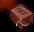 |
«Set mine»
cursor is used to show the character where to place a mine. It appears
after you click on «Set mine» command on the game panel and
doesn't change shape when you place it over screen objects. To place
a mine, click on the appropriate point. Mines and booby-traps are highlighted
with white contour. Active mines can be disarmed providing your characters
have appropriate skill and tools; after that the mine can be used again. |
| |
«Dialogue»
cursor appears when placed over an NPC with whom you can talk. Usually
these characters are friendly (highlighted with green contour) or neutral
(blue contour). To start a conversation, click on the character. |
| |
«Look»
cursor is used to tell characters the direction they should turn and
look at. The cursor appears on Combat screen after you select «Look»
command; it doesn't change shape when you place it over screen objects.
Every time a character turns it costs 2 APs, so no numbers are displayed
next to this cursor. To issue the command, point in the direction you
need or click on an object; it doesn't matter whether it's within the
character's range of vision or not. |
| |
«Heal»
cursor appears after you choose «Heal» command on the game
panel or place the cursor over any member of your squad,
providing the character holds a medical item in hands. In turn-based
mode the total AP cost is displayed to the right of the cursor, including
the cost of walking to the wounded and beginning the treatment. To start
healing, click on the wounded character or the tab with his name and
VP bar on the game panel. |
Attack cursors
Cursors of this group appear only in Combat screen and indicate
commands you need to issue to your characters to attack the opposition. The
cursor shape corresponds to the attack type; it's determined by the weapon
the selected character holds. The cursor takes appropriate shape when placed
over enemy characters or their icons. Also, these cursors allow to attack
any object in the area; use «Attack» command on the game panel.
To the right of the cursor, the probability of hitting the target and the
AP cost of the attack are displayed. To begin the attack, click on the enemy
character or his icon, or on the object (a target or an area).
You can use several characters to attack the target simultaneously,
providing all of them use weapons of the same class (e.g. firearms or grenades).
In that case there will be two figures displayed to the right of the cursor
— minimum and maximum probability of hitting the target and AP cost to all
of the selected characters.
| 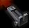 |
«Aim/Fire»
cursor means attack with firearms; it's used under various circumstances.
First, it indicates the enemy character or the object you need to attack.
To fire, your character must hold a loaded weapon. Second, this cursor
is used to take aim in sniper shooting mode (the character taking aim
will not fire until you issue specific command). Please refer to Sniper
Shooting section for more. |
| 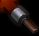 |
«Grenade
Attack» cursor appears when you issue «Attack» command
if the character holds a grenade. Usually grenades can be thrown at
enemy character or point on the ground (the centre of the explosion).
To the right of the cursor is displayed the probability of hitting the
target (for enemy characters — probability to throw the grenade at his
feet) and the AP cost. Another way to use grenades is to set up a booby-trap
(e.g. at a door or a window). Choose this mode on the game panel and
click on the object to set the booby-trap. |
| 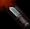 |
«Melee
Attack» cursor appears when placed over an enemy or after you click
on «Attack» command, providing the character is holding a
melee weapon (knife, club, throwing weapon etc.). |
| |
«Unarmed
Attack» cursor appears when placed over an enemy or after you choose
«Attack» command, providing your character is unarmed. |
| 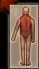 |
«Hit Location»
cursor appears instead of other attack cursors if you press a key corresponding
to a specific body part when placing the cursor over an enemy character
or his icon. To the right of the cursor is displayed the probability
of hitting the selected body part and the AP cost. Only people can be
attacked in this mode. Please refer to «Precision Attack»
section of this manual for more. |